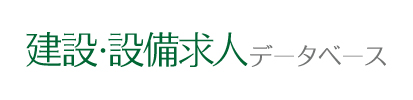
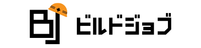
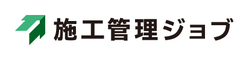

1
建設・設備求人データベース
| 順位 | サイト名 | 評価 | 求人数 | 職種 | 特徴・詳細 |
|---|---|---|---|---|---|
| 1 |

建設・設備求人 データベース |
5.0 | 1.5万件 (非公開含) |
|
|
| 2 |  ビルドジョブ | 4.2 | 非公開 (未経験OK) |
|
|
| 3 |  施工管理ジョブ | 3.3 | 非公開 (大規模案件) |
|